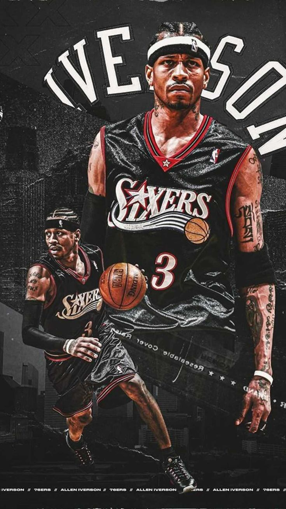
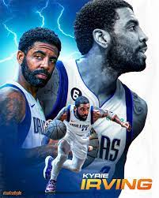

Allen Iverson y Kyrie Irving han sido dos de los jugadores con el mejor manejo del balón en la historia de la NBA. Iverson, famoso por su icónico crossover, dejó huella con su rapidez y destreza. Kyrie, por otro lado, es reconocido por su habilidad en el dribbling y su capacidad para finalizar en la pintura con movimientos impresionantes.
 